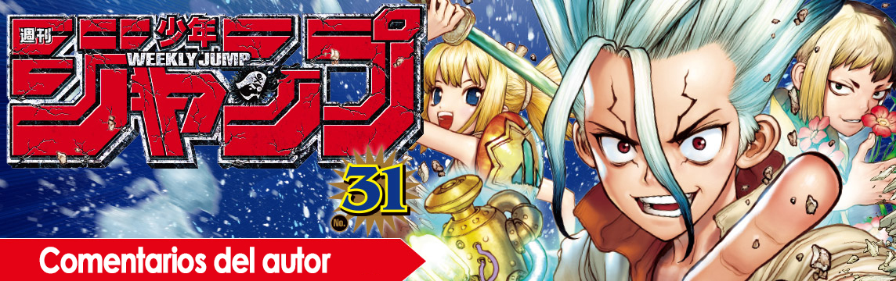
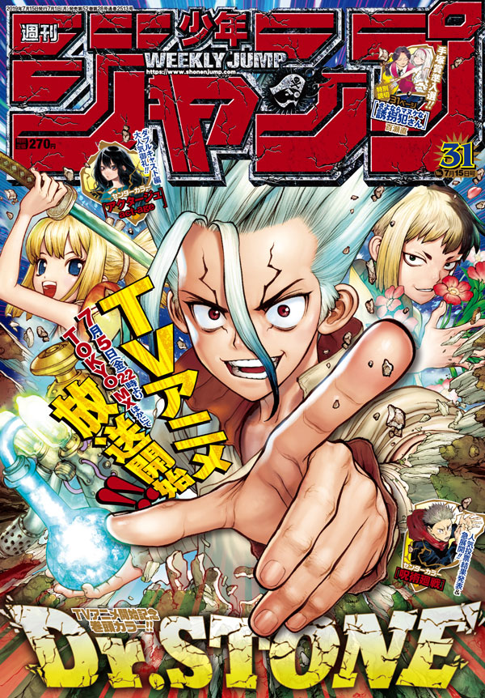

Los puestos y comentarios de los autores de la Weekly Shonen Jump de esta semana.

Guardianes de la noche

Soy una de esas personas que escucha y se ríe cuando dos personas graciosas están hablando.
One Piece

La conferencia de prensa y programa de radio anunciando la boda de Yama-chan fueron perfectos! Enhorabuena desde los más profundo de mi corazón!
The Promised Neverland

Me he enamorado de el té Taiwanés. Prepararlo y beberlo calma mi mente y corazón. Esta delicioso! Quiero aprender cocina terapéutica china.
Black Clover

Lo siento por tomarme un descanso la última semana! Voy a tomarme los mangos que recebi de Mr. W y trabajar mucho! Muchas gracias.
Jujutsu Kaisen

Llevo todo el día pensando en cosas populares de los noventa y luego he caído en que me he pasado una década.
Samurai8 - La leyenda de Hachimaru
Death Stranding, un videojuego que espero con ganas, se estrena en mi cumpleaños! Es el destino!
We Never Learn

El zumo vegetal que tenía en el frigorífico se congeló! Será que mi frigorífico es muy poderoso?!
Tokyo Shinobi Squad

Fui a la exhibición de Yasuhiro Nightow! Estaba abrumado de ver páginas reales de mis manga favoritos en todo el universo!
ACT-AGE

No soy capaz de encontrar el momento exacto para cambiar las puntas del lápiz de mi tableta, las puntas de las plumas y los cepillos de dientes.
Hinomaru Sumo

El volumen 26 de Hinomaru Sumo será publicado el día 4 del próximo mes! Gracias por el apoyo.
Chainsaw Man

Estoy comiendo todas las cosas que vosotros me mandáis. Está todo muy rico.
Haikyu!!

Me entristece que la galería de cine de Universal Studios Japón haya cerrado. Ojalá hubiese ido una última vez.
Beast Children

Muchas gracias por estos nueve años, Isaka-san! Es genial trabajar contigo, Honda-san!
Yui Kamio Lets Loose

La copa del mundo Sub-20, la copa del mundo femenina, el torneo Toulon y la copa América. He visto la a la selección japonesa casi todos los días en junio!
Double Taisei

Gracias por toda tu ayuda hasta ahora, Isaka-san. Será genial trabajar contigo, Monji-san!
The Last Saiyuki

Mi staff ha traído regalos!
Dr. STONE
Riichiro Inagaki
Finalmente el anime empieza! Estoy muy emocionado! Hay una avance en internet, así que echadle un vistazo!